MyBox User Guide – Document Tools v6.6
MyBox: Easy Tools Set
User Guide – Document Tools
Author: Mara
Version: 6.6
Date: 2022-9-28
Contents
1 Introduction 3
1.1 Main Interface 3
1.2 Resources Addresses 4
1.3 Documents 5
1.4 Menu of Tools 5
2 Information in Tree 6
3 Notes 7
4 PDF Tools 9
4.1 View PDF file: 9
4.2 Convert PDF files in batch 9
4.3 Extract data in batch 10
4.4 Others 10
5 Base of Text Editors 11
6 Markdown Tools 12
6.1 Markdown Editor 12
6.2 Convert Markdown files in batch 12
7 Text Tools 13
7.1 Text Editor 13
7.2 Others 13
8 Html Tools 14
8.1 Html Editor 14
8.2 Find strings in html 15
8.3 Find elements in html 16
8.4 Snap html page 17
8.5 Others 17
9 Microsoft Documents 18
9.1 Handle PPT file 18
9.2 Handle Word file 19
9.3 Others 19
10 Edit Bytes 20
11 Text in System Clipboard 21
12 Text in MyBox Clipboard 22
This is desktop application based on JavaFx to provide simple and easy functions. It's free and open sources.
|
Contents |
Link |
|---|---|
|
Project Main Page |
|
|
Source Codes and Compiled Packages |
|
|
Submit Software Requirements and Problem Reports |
|
|
Data |
|
|
Documents |
|
|
Mirror Site |
|
|
Cloud Storage |
https://pan.baidu.com/s/1fWMRzym_jh075OCX0D8y8A#list/path=%2F |

|
Name |
Version |
Time |
English |
Chinese |
|---|---|---|---|---|
|
Development Logs |
6.6 |
2022-9-28 |
||
|
Shortcuts |
6.5.6 |
2022-6-11 |
||
|
Packing Steps |
6.3.3 |
2020-9-27 |
||
|
Development Guide |
2.1 |
2020-8-27 |
||
|
User Guide - Overview |
6.6 |
2022-9-28 |
||
|
User Guide - Document Tools |
6.6 |
2022-9-28 |
||
|
User Guide - Image Tools |
6.6 |
2022-9-28 |
||
|
User Guide - File Tools |
6.6 |
2022-9-28 |
||
|
User Guide - Network Tools |
6.6 |
2022-9-28 |
||
|
User Guide - Data Tools |
6.6 |
2022-9-28 |
||
|
User Guide - Media Tools |
6.6 |
2022-9-28 |
||
|
User Guide - Development Tools |
6.6 |
2022-9-28 |
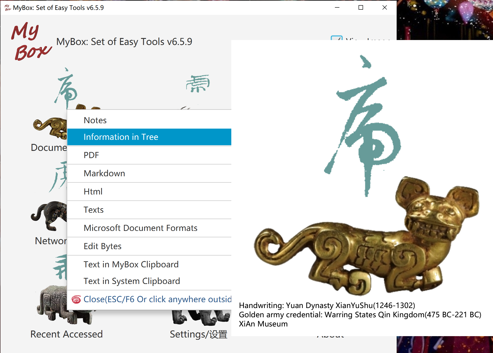
Information is organized as a tree.
Following operations can be done against any node in the tree:
Add/Delete/Edit children, rename, move, copy, export, display tree view, unfold, and fold.
Edit node:
Name should not include string " > "(Blank before and after ">").
Each node can have multiple tags.
Option to show sequcency numbers.
Export:
Formats: Text(for import), single html, html frameset, xml.
Options to export time, or tags.
Charset can be set.
Html style can be set.
Import. Example is provided.
Query:
Children or all descendants.
By tags.
By times.
By strings in title/contents.
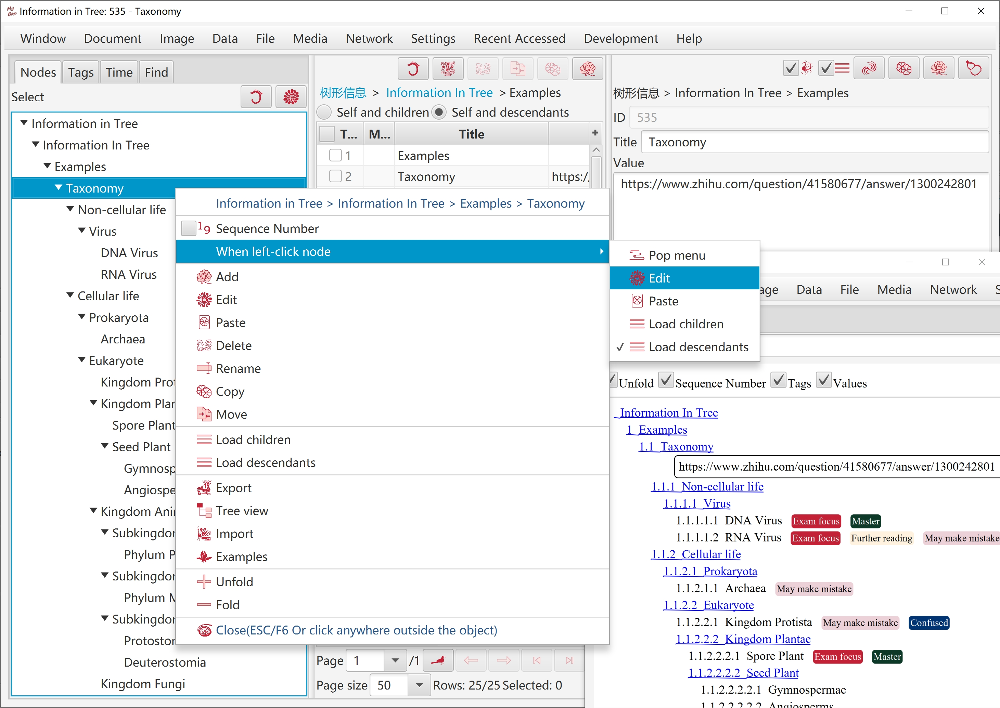
Note is a piece of information in html format:
Note can be edited in 4 modes: "html code", "Rich text", "Markdown", "Texts".
Each edit mode can change the html separately.
The mode in current tab is "current edit mode".
Click button "Synchronize"(F10) to apply updates in current edit mode to other modes.
Click button "Save"(F2) to save updates in current edit mode and synchronize automatically.
Note' html code should be contents of "body" and have not tags "html", "head" and "body".
Style can be set for note. Style is only for displaying and not saved in note's codes.
Notebook is information tree of notes.
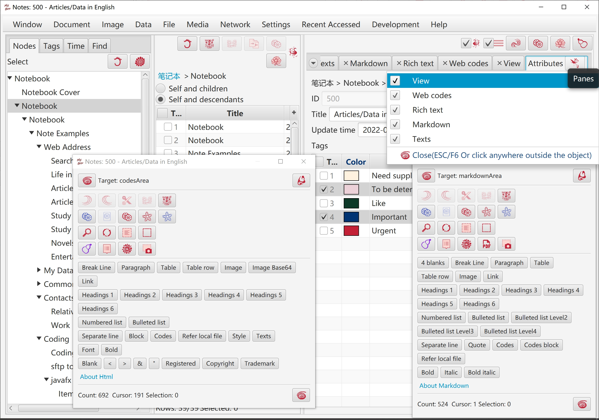
Bookmarks and thumbnails.
Each page is converted as an image. DPI can be set to adjust resolution.
Extract text in page.
Convert page as a html page.
Recognize texts in PDF(OCR).
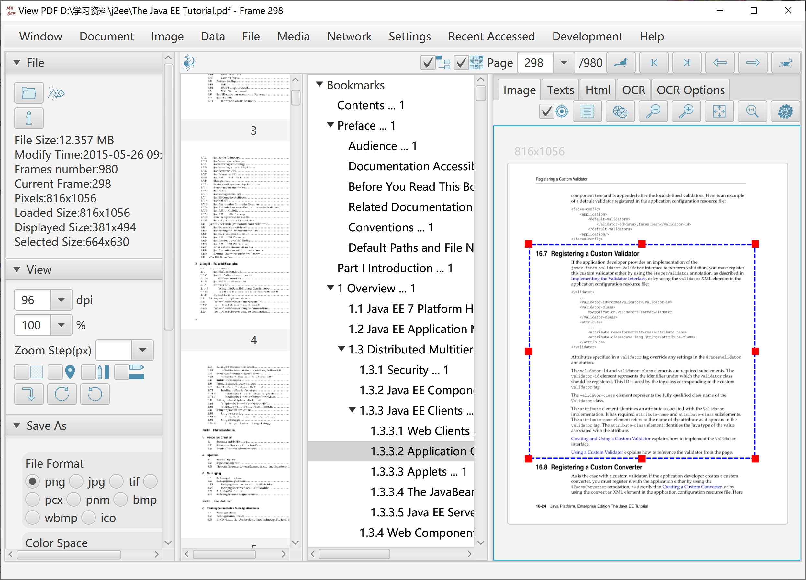
Convert pages of PDF as image files. Options like format, density, color space, compression, quality, etc.
Convert images in selected pages of PDF files, and save as new PDF files.
Compress images in PDF files, and save as new PDF files. JPEG quality or threshold of black-white can be set.
Convert PDF files as html files in batch. Options: Whether one html for each page or one html for each PDF; The way to handle fonts/images: embed, save separately, or ignore.
Extract images in PDF file.
Extract texts in PDF file. Splitting line can be customized.
Recognize texts(OCR) in images of PDF files.
Split a PDF file into multiple PDF files, by pages number, by files number, or by start-end list.
Merge multiple PDF files.
Combine multiple images as PDF file.
Options to write PDF like page size, image attributes, font file, margin size, header, author, etc.
Modify PDF file's attributes like title, author, modify time, user password, owner password, user permissions, etc.
General functions of editing, like copy/paste/cut/delete/selectAll/undo/redo/recover. And their shortcuts.
Find and replace:
Options: Case-insensitive, Wrap around.
Both Find String and Replace String can be multiple lines. Their line breaks are handled as file's definition.
Support regular expression. Provide examples.
Counting.
Due to limitation of algorithm, to find regular expression in pages，assume maximum length of matched string is less than 1/16 of current JVM available memory.
Locate：
Select character at specified position.
Select line at specified position.
Select lines of specified range.
Select characters of specified range.
Filter lines:
Conditions: Include/Not include One, Include/Not Include All, Include/Not Include Regular Expression, Match/Not Match Regular Expression.
Cumulative filter.
Filtered results can be saved. Select whether include lines number.
Paginate. Good at viewing or editing very large file, such as logs in size of several GBs.
Set page size.
Pages navigation bar
Load and display first page, and scan the file in background to count characters number and lines number.
Part of functions are unavaliable while counting. Interface will be refreshed automatically after counting process is complete.
Make sure correction of finding, replacing, and filtering of strings that are across pages.
Auto-save periodically.
Auto-backup when save.
Provide buttons to help inputting formats.
Display converted html and html codes synchronously.
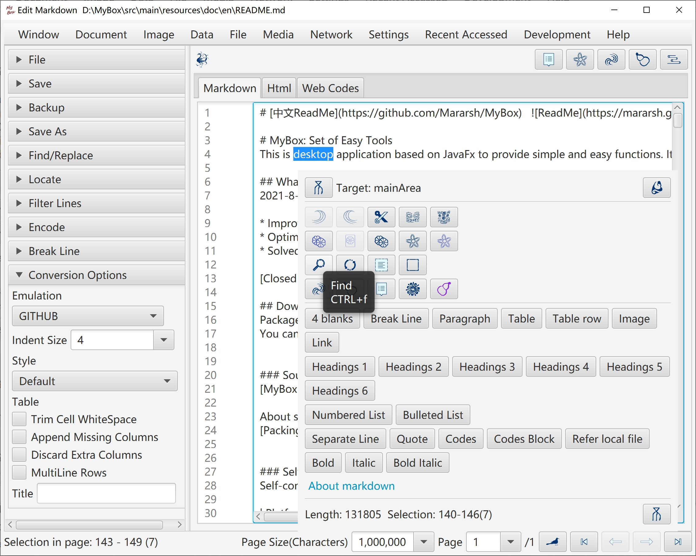
Convert Markdown as html in batch.
Convert Markdown as texts in batch.
Convert Markdown as PDFs in batch.
File charset can be either detected automatically or set manually. Target file charset can be selected to implement encoding conversion. BOM setting is supported.
Detect line break automatically. Convert line break. Show lines number.
Support LF(Unix/Linux), CR(Apple), and CRLF(Windows).
Hexadecimal codes according file's charset can be viewed, scrolled, and selected synchronously.
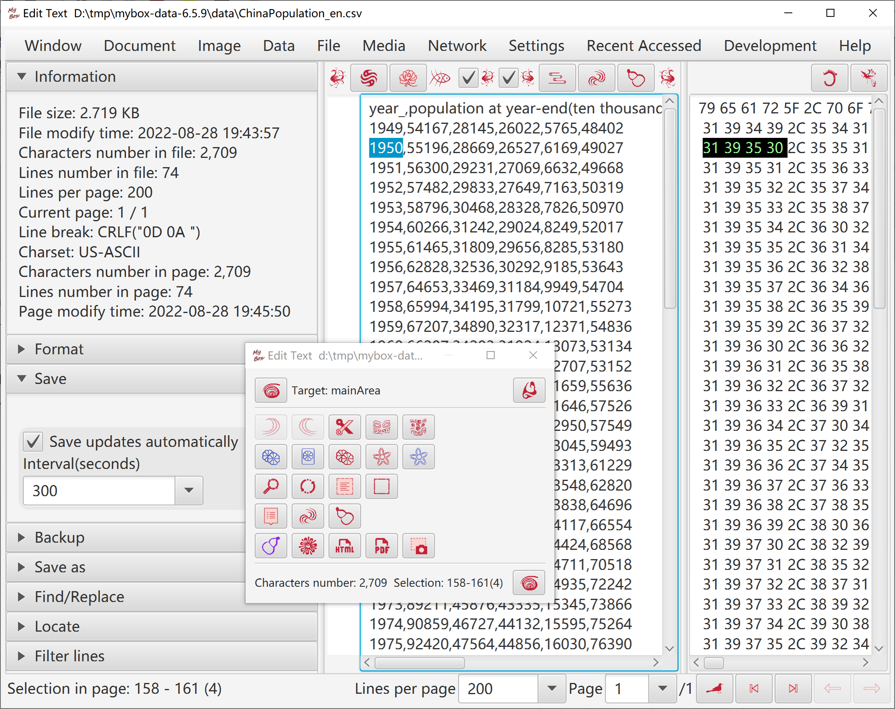
Convert/Split text files in batch.
Merge text files.
Convert text as htmls/PDF in batch.
Replace strings in text files in batch.
Html can be loaded by opening file, creating new file , or inputting address.
Html can be edited in 4 modes which are "html code", "Rich text", "Markdown", "Texts":
Each edit mode can change the html separately.
The mode in current tab is "current edit mode".
Click button "Synchronize"(F10) to apply updates in current edit mode to other modes.
Click button "Save"(F2) to save updates in current edit mode and do "Synchronize" automatically.
Click button "Pop"(CTRL/ALT+p) to display contents in current edit mode in a new window.
Click button "Menu"(F12) or right click edit area to pop buttons menu.
Click button "MyBox Clipboard"(CTRL/ALT+m) to pop texts clipboard for pasting.
Select frame in frameset to edit.

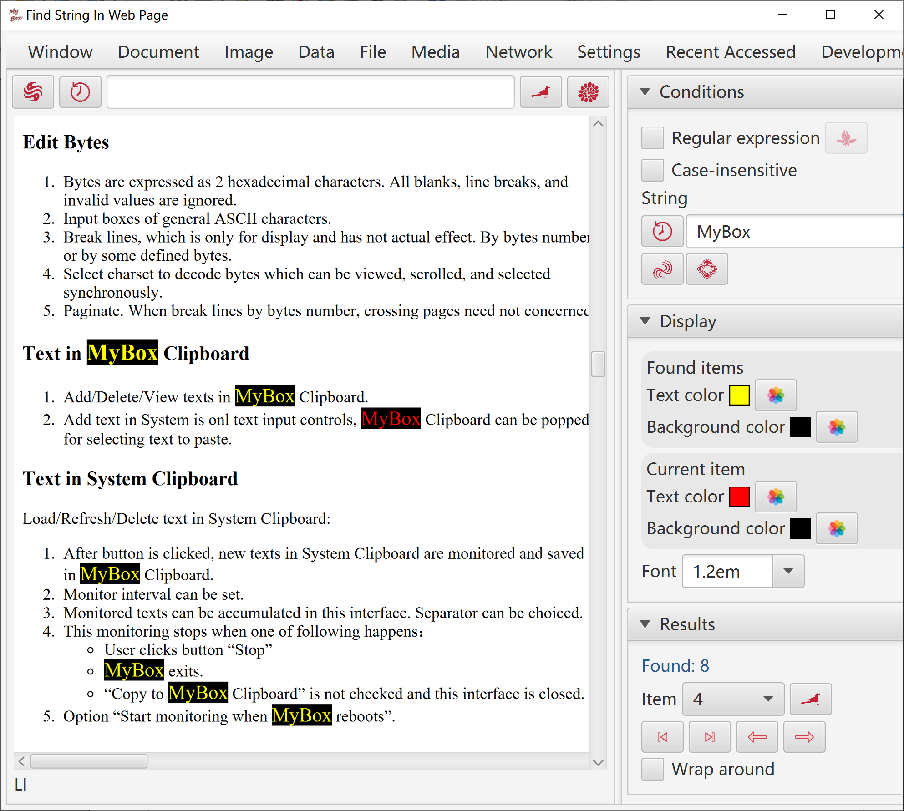
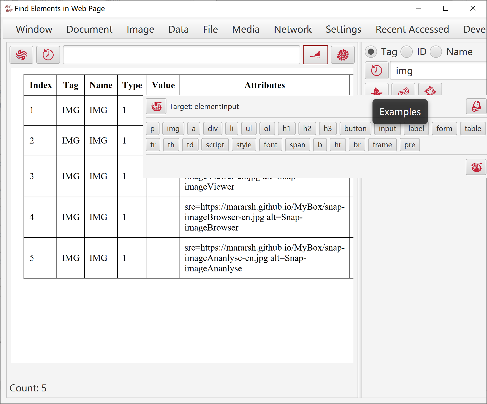
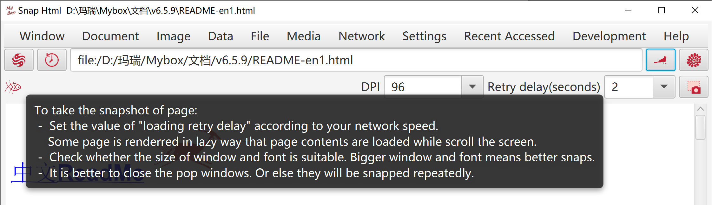
Extract table data in html in batch.
Convert html as Markdown/text/PDF in batch.
Convert charset/style in html files in batch.
Merge multiple pages as one html/Markdown/texts/PDF.
Generate frameset file for multiple files.
Formats:
File ".ppt"(PPT 97, OLE 2) .
File ".pptx"(PPT 2007, OOXML).
If no comment, both formats are suportted.
View PPT file. Shown page by page:
Page is converted as an image
Slide text and Note text are displayed
Convert PPT files as images/PDF in batch
Extract objects in PPT file in batch:
Selections: Slide text, Note text, Master text, Comments text, image, sound, OLE(Word/Excel)
Not support to extract sounds in ".pptx".
Split PPT files in batch
Merge ".pptx" files
Combine images as ".ppt" file.
Play PPT file
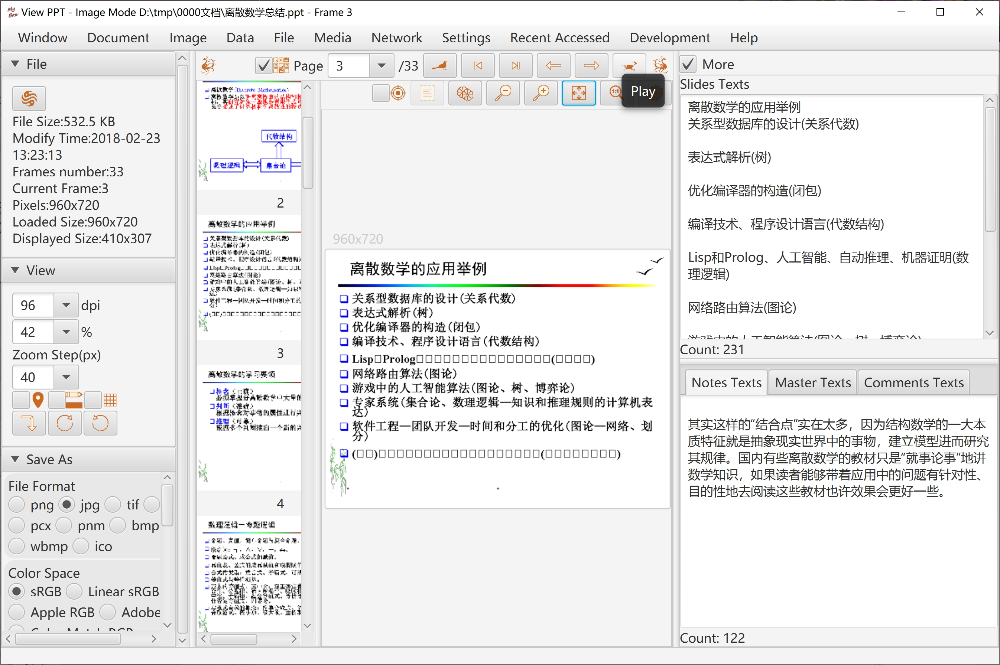
Formats:
File ".doc"(Word 97， OLE 2) is converted as html. Most of formats kept.
File ".docx"(Word 2007, OOXML) is converted as text. Formats lost.
View Word file.
Convert Word files as html/PDF in batch.
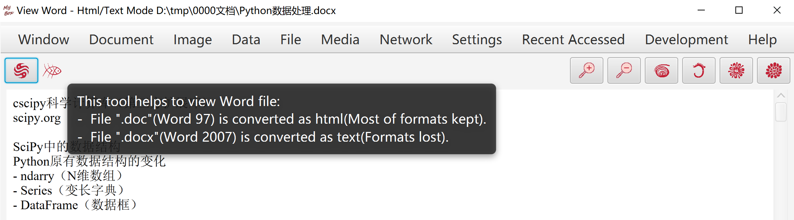
Extract texts in Excel/Word/PowerPoint/Publisher/Visio files in batch.
Bytes are expressed as 2 hexadecimal characters. All blanks, line breaks, and invalid values are ignored.
Input boxes of general ASCII characters.
Break lines, which is only for display and has not actual effect. By bytes number or by some defined bytes.
Select charset to decode bytes which can be viewed, scrolled, and selected synchronously.
Paginate. When break lines by bytes number, crossing pages need not concerned.
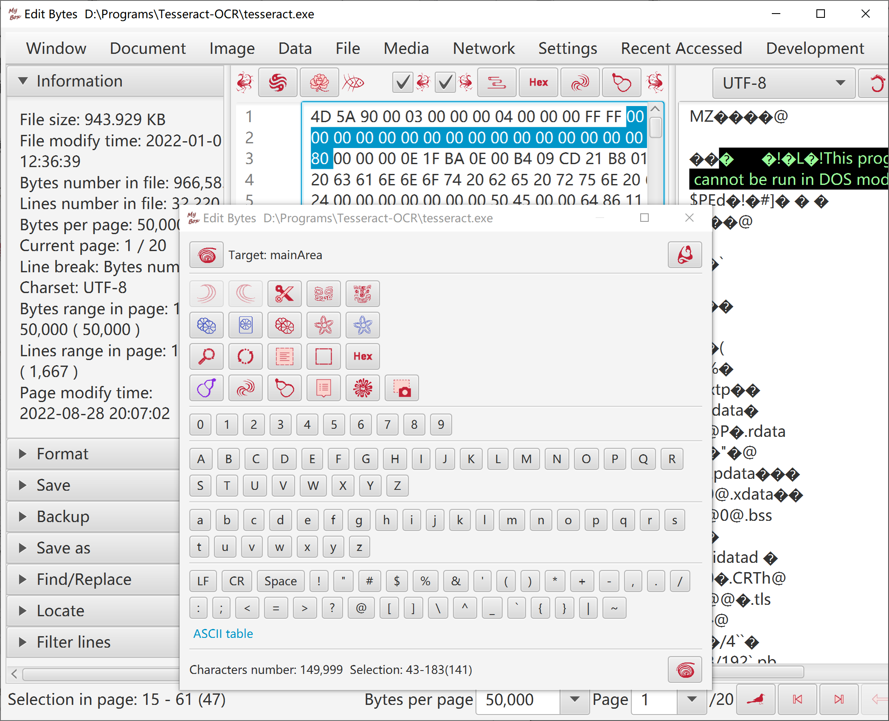
Load/Refresh/Delete text in System Clipboard:
After button is clicked, new texts in System Clipboard are monitored and saved in MyBox Clipboard.
Monitor interval can be set.
Monitored texts can be accumulated in this interface. Separator can be choiced.
This monitoring stops when one of following happens：
User clicks button "Stop"
MyBox exits.
"Copy to MyBox Clipboard" is not checked and this interface is closed.
Option "Start monitoring when MyBox reboots".
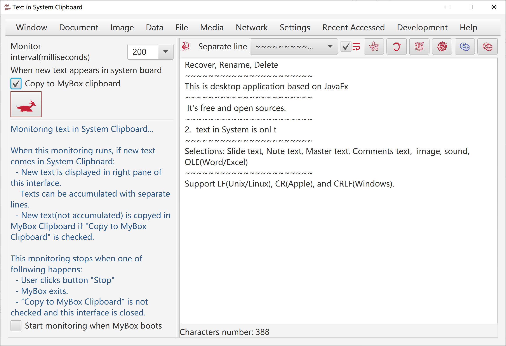
Add/Delete/View texts in MyBox Clipboard.
Add text in System is onl text input controls.
Copy selected texts in System clipboard.
MyBox Clipboard can be popped for selecting text to paste.
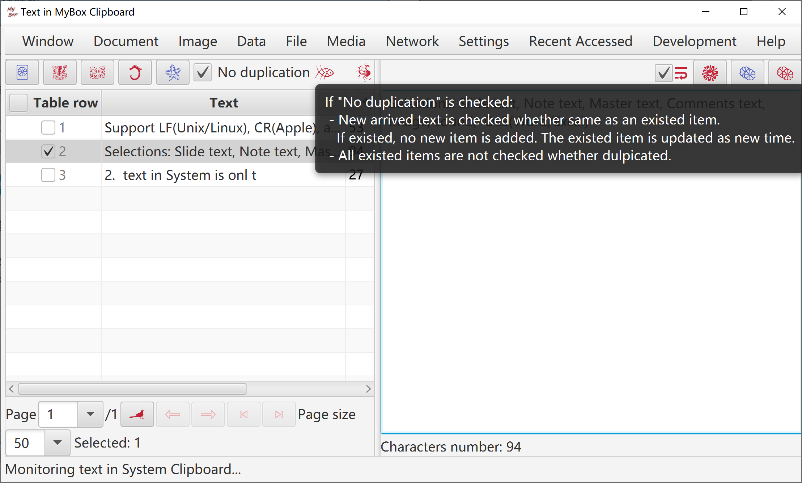
<End of Document>
Page